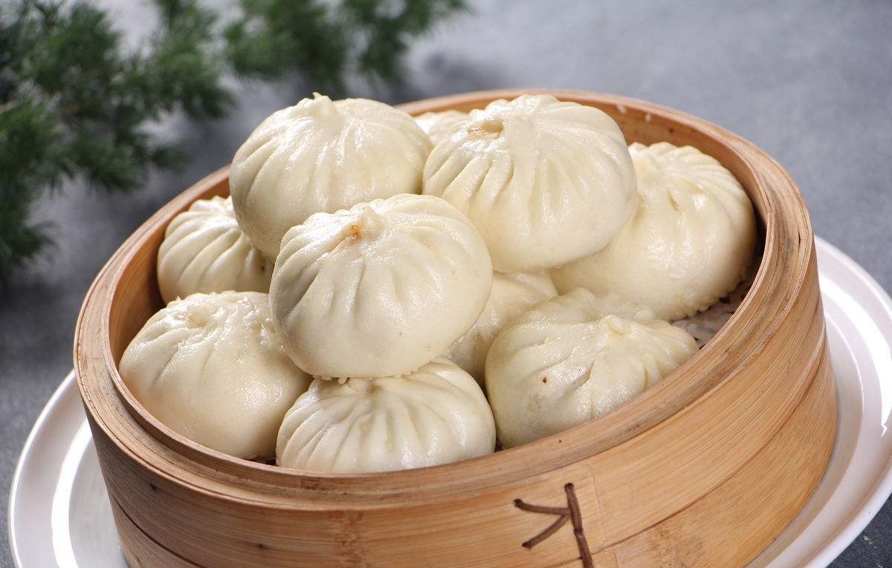

Baozi

Description
Everyone has staples in their freezer––a pint of ice cream, a box of waffles, or a bag of frozen peas. The freezer staples I can’t do without are frozen rice, frozen man-tou, frozen dumplings and finally, some sort of savory bun, like these steamed pork buns (baozi, 包子 in Chinese).
They’re my emergency meal source! With these on hand, I’m never more than 30 minutes away from a satisfying meal that’s also grab-and-go. I love to make my own steamed buns, because I get to decide which delicious fillings I’m going to make.
Ingredients
- 5 g active dry yeast
- 8 g granulated sugar (2 teaspoons)
- 1 1/2 cups lukewarm water (355 ml)
- 580 g all purpose flour (about 5 cups, plus extra for kneading and rolling)
Steps
- In a large mixing bowl or mixer with a dough hook attachment, completely dissolve yeast and sugar in lukewarm water. Wait 10-15 minutes to let the yeast become active and foam up.
- Add in the flour ½ cup at a time and knead for about 15 minutes. Adjust the last ½ cup flour accordingly. The dough should be soft––not sticky and not too firm. Once the dough is even and smooth, form it into a ball. Cover it with a damp kitchen towel and let it proof one hour in a warm place. (If kneading by hand, knead the dough until it’s as smooth as a baby’s butt!) While it’s proofing, make the filling.
- Add the ground meat to a large mixing bowl and stir in 3 tablespoons water until well incorporated.
- Now preheat the wok or a cast iron pan until it starts to smoke lightly. Add in 3 tablespoons oil, along with the minced ginger and diced onion. Cook over medium heat until the onions soften. Add in the ground pork and turn up the heat, stirring to break up any large chunks. Cook until all the pork turns pale and opaque––there is no need to brown or crisp the meat.